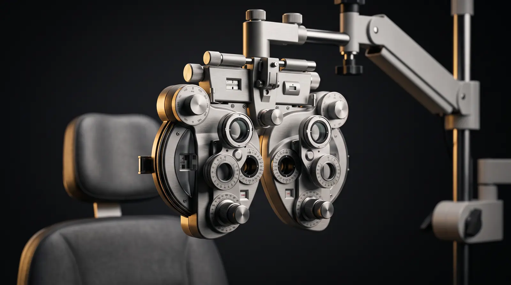
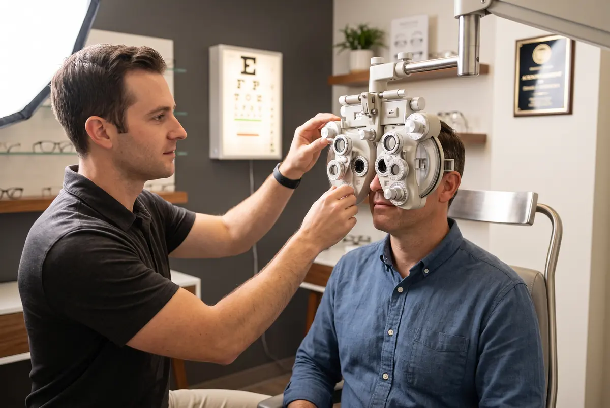

Antirreflejo
Elimina reflejos de pantallas, luces y focos. Mayor nitidez visual, menos fatiga y un aspecto más limpio en tus lentes.
- Ideal para trabajo en pantallas
- Mejor visión nocturna al conducir
- Lentes de apariencia más clara
Visual Point
Panamá

Servicios
Exámenes visuales completos y la mejor tecnología en cristales, con equipos de precisión y especialistas certificados.

Salud Visual
Optometristas certificados y equipos de diagnóstico de última generación para conocer con precisión el estado real de tu visión, no solo tu graduación.
Ofrecemos lo mejor del mercado para que cada par de lentes sea perfecto para tu vida.
Elimina reflejos de pantallas, luces y focos. Mayor nitidez visual, menos fatiga y un aspecto más limpio en tus lentes.
Filtro especializado que bloquea la luz azul emitida por pantallas digitales, reduciendo la fatiga ocular y mejorando el descanso.
Una sola lente para ver de cerca, lejos e intermedio. Diseño invisible sin líneas, perfectos para personas mayores de 40 años.
Fabricados digitalmente con precisión individual. Visión más nítida, mejor contraste y aberraciones mínimas en los bordes.
Se adaptan a la intensidad luminosa del ambiente. Transparentes en interiores y oscuros en exteriores con protección UV total.
Manejamos más tecnologías y marcas de cristales. Cuéntanos qué necesitas y te asesoramos para encontrar la opción perfecta para tu estilo de vida.
La tecnología fotocromática más avanzada del mundo. Se oscurecen automáticamente al contacto con la luz solar y regresan a su estado claro en interiores, adaptándose a cada entorno en segundos. Un solo par de lentes para todo tu día.
Servicio Técnico
Técnicos especializados en cada sucursal para que tus lentes queden perfectos, ajustados a tu rostro y listos el mismo día en la mayoría de los casos.
Encuentra tu sucursalCalibrado a la medida de tu rostro para máxima comodidad.
Actualiza tu graduación conservando el armazón que ya amas.
Reparación de bisagras, plaquetas y piezas dañadas.
Elimina residuos y devuelve la transparencia a tus cristales.
Tu Salud Visual es Prioridad
Agenda tu examen visual o visítanos en cualquiera de nuestras 8 sucursales. Nuestro equipo está listo para atenderte.